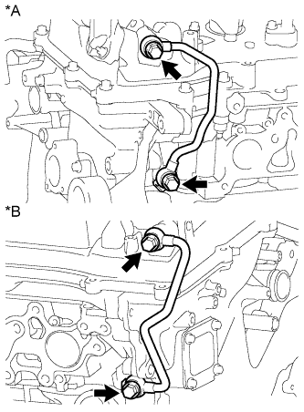

DTC P0014 Положение распредвала "B" – газораспределение с чрезмерным опережением или рабочие характеристики системы (ряд 1) |
DTC P0015 Положение распредвала "B" – газораспределение с чрезмерным запаздыванием (ряд 1) |
DTC P0024 Положение распредвала "B" – газораспределение с чрезмерным опережением или рабочие характеристики системы (ряд 2) |
DTC P0025 Положение распредвала "B" – газораспределение с чрезмерным запаздыванием (ряд 2) |
| № DTC | Условие обнаружения DTC | Неисправный участок |
| P0014 P0024 | Фазы газораспределения не регулируются в диапазоне опережения (логика диагностирования за 2 поездки). |
|
| P0015 P0025 | Фазы газораспределения не регулируются в диапазоне запаздывания (логика диагностирования за 1 поездку). |
|
| Ряд, в котором имеется неисправность | Газораспределение с чрезмерным опережением (Фазы газораспределения не соответствуют заданному диапазону) | Газораспределение с чрезмерным запаздыванием (Фазы газораспределения не соответствуют заданному диапазону) |
| Ряд 1 | P0014 | P0015 |
| Ряд 2 | P0024 | P0025 |
| 1.ПРОВЕРЬТЕ, НЕ ВЫВОДЯТСЯ ЛИ ДРУГИЕ DTC (ПОМИМО DTC P0014, P0015, P0024 ИЛИ P0025) |
Подсоедините портативный диагностический прибор к DLC3.
Включите зажигание (IG).
Включите портативный диагностический прибор.
Войдите в следующие меню: Powertrain / Engine and ECT / DTC.
Считайте коды DTC.
| Результат | Следующий шаг |
| DTC P0014, P0015, P0024 или P0025 выводится | А |
| DTC P0014, P0015, P0024 или P0025 и другие DTC выводятся | B |
|
| ||||
| А | |
| 2.ВЫПОЛНИТЕ АКТИВНУЮ ДИАГНОСТИКУ С ПОМОЩЬЮ ПОРТАТИВНОГО ДИАГНОСТИЧЕСКОГО ПРИБОРА (CONTROL THE VVT EXHAUST LINEAR (BANK 1 ИЛИ 2)) |
Подсоедините портативный диагностический прибор к DLC3.
Запустите двигатель.
Включите портативный диагностический прибор.
Войдите в следующие меню: Powertrain / Engine and ECT / Active Test / Control the VVT Exhaust Linear (Bank 1) или Control the VVT Exhaust Linear (Bank 2).
Проверьте частоту вращения коленчатого вала двигателя, управляя гидравлическим клапаном изменения фаз с помощью портативного диагностического прибора.
| Режим работы прибора | Состояние двигателя |
| 0% (ВЫКЛ) | Нормальная частота вращения коленчатого вала двигателя |
| 127% (ВКЛ) | Двигатель глохнет или неравномерно работает на холостом ходу сразу после переключения гидравлического клапана изменения фаз из выключенного состояния во включенное |
|
| ||||
| OK | |
| 3.ПРОВЕРЬТЕ, ВОЗОБНОВЛЯЕТСЯ ЛИ ВЫВОД DTC (DTC P0014, P0015, P0024 ИЛИ P0025) |
Подсоедините портативный диагностический прибор к DLC3.
Включите зажигание (IG).
Включите портативный диагностический прибор.
Удалите коды DTC (Нажмите здесь).
Совершите поездку на автомобиле в течение более 10 минут.
Войдите в следующие меню: Powertrain / Engine and ECT / DTC / Pending.
Считайте ожидающие обработки коды DTC.
| Результат | Следующий шаг |
| Коды DTC не выводятся | А |
| DTC P0014, P0015, P0024 или P0025 выводится | B |
|
| ||||
| А | ||
| ||
| 4.ПРОВЕРЬТЕ ФАЗЫ ГАЗОРАСПРЕДЕЛЕНИЯ (ПРОВЕРЬТЕ, НЕТ ЛИ ОТСУТСТВУЮЩИХ И СЛОМАННЫХ ЗУБЬЕВ НА ЦЕПНОМ ПРИВОДЕ ГАЗОРАСПРЕДЕЛИТЕЛЬНОГО МЕХАНИЗМА) |
 |
Снимите крышки правой и левой головок блока цилиндров в сборе.
Поверните коленчатый вал, чтобы совместить метки.
Совместите метку шкива коленчатого вала с положением "0".
Убедитесь, что метки на шкиве распредвала и крышке подшипника распредвала были совмещены.
| *a | Установочная метка |
Если метки не совмещены, поверните коленчатый вал по часовой стрелке на 360°. Еще раз убедитесь, что они совмещены.
Установите на место крышки правой и левой головок блока цилиндров в сборе.
|
| ||||
| OK | |
| 5.ПРОВЕРЬТЕ ГИДРАВЛИЧЕСКИЙ КЛАПАН ИЗМЕНЕНИЯ ФАЗ В СБОРЕ (РАСПРЕДВАЛА ВЫПУСКНЫХ КЛАПАНОВ РЯДА 1, 2) |
Проверьте гидравлический клапан изменения фаз в сборе (распредвала выпускных клапанов ряда 1, 2) (Нажмите здесь).
|
| ||||
| OK | |
| 6.ПРОВЕРЬТЕ ФИЛЬТР И МАСЛОПРОВОД ГИДРАВЛИЧЕСКОГО КЛАПАНА ИЗМЕНЕНИЯ ФАЗ |
|  |
Снимите маслопровод № 1 или маслопровод № 2.
Снимите правый фильтр гидравлического клапана изменения фаз или левый фильтр гидравлического клапана изменения фаз.
Проверьте, не засорены ли фильтр гидравлического клапана изменения фаз и маслопровод.
| *A | Ряд 2 |
| *B | Ряд 1 |
Установите на место правый фильтр гидравлического клапана изменения фаз или левый фильтр гидравлического клапана изменения фаз.
Установите на место маслопровод № 1 или маслопровод № 2.
|
| ||||
| OK | |
| 7.ЗАМЕНИТЕ ЗУБЧАТОЕ КОЛЕСО РАСПРЕДВАЛА ВЫПУСКНЫХ КЛАПАНОВ В СБОРЕ |
Замените зубчатое колесо распредвала выпускных клапанов в сборе (ряда 1 или ряда 2) (Нажмите здесь).
| ДАЛЕЕ | |
| 8.ПРОВЕРЬТЕ, ВЫВОДИТСЯ ЛИ КОД DTC СНОВА |
Подсоедините портативный диагностический прибор к DLC3.
Включите зажигание (IG).
Включите портативный диагностический прибор.
Сбросьте коды DTC (Нажмите здесь).
Совершите поездку на автомобиле в течение более 10 минут.
Войдите в следующие меню: Powertrain / Engine and ECT / DTC / Pending.
Считайте ожидающие обработки коды DTC.
| Результат | Следующий шаг |
| Коды DTC не выводятся | А |
| DTC P0014, P0015, P0024 и P0025 выводятся | B |
|
| ||||
| А | ||
| ||